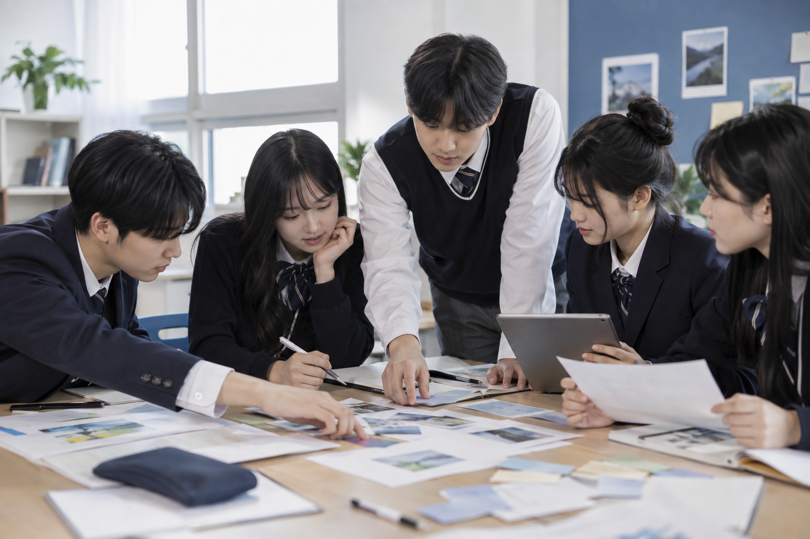

R
이야기·사례 읽기
인물, 상황, 문제의 맥락을 이해합니다.
READ 프레임을 공통 구조로 사용하되, 학교급과 수업 목적에 따라 수업·워크숍·프로젝트 형태로 개발합니다.
자료와 난이도는 달라져도 읽기에서 자기발견까지 이어지는 학습 흐름은 유지합니다.
인물, 상황, 문제의 맥락을 이해합니다.
직업·산업·역할과 변화를 찾아봅니다.
질문하고 판단하며 협업해 결과물을 만듭니다.
흥미·강점·가치를 돌아보고 기록합니다.

한 가지 이야기나 사례를 중심으로 자기이해, 진로정보 읽기, 탐구와 성찰을 연결합니다.
직업 역할을 맡아 문제를 분석하고 질문·판단·협업을 통해 결과물을 만드는 활동입니다.
고등학생이 전공, 산업, 직무 정보를 실제 문제와 연결해 탐구합니다.
현재 프로그램과 워크북을 개발하고 있습니다. 실제 수업안과 자료가 준비된 내용부터 순차 공개합니다.
무엇을 더 알고 싶은지 스스로 만든 진로 질문
직업인의 관점으로 판단하고 협업한 활동 기록
활동에서 확인한 나의 흥미·강점·가치와 가능성